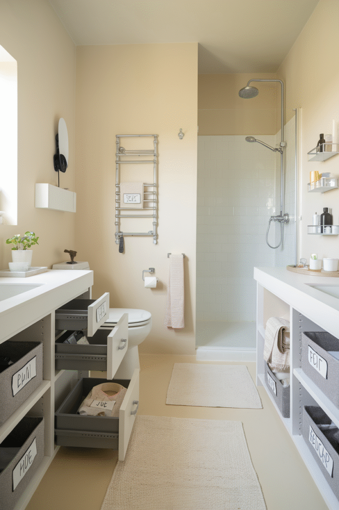
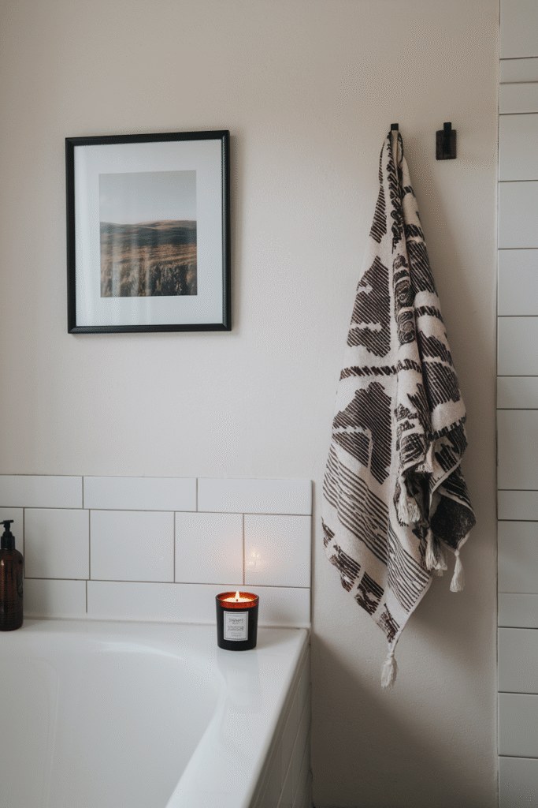
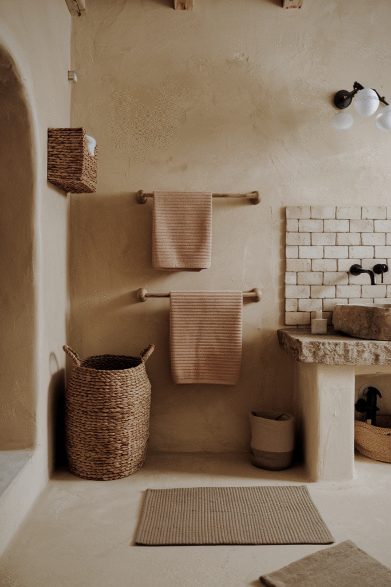
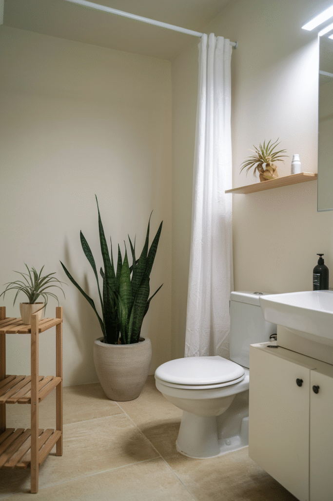
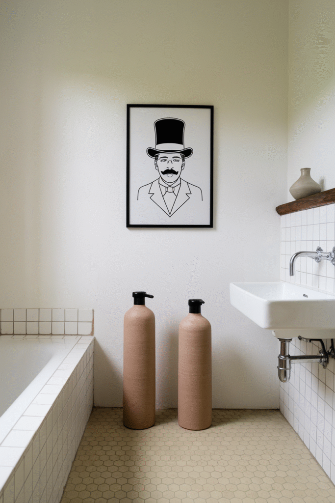
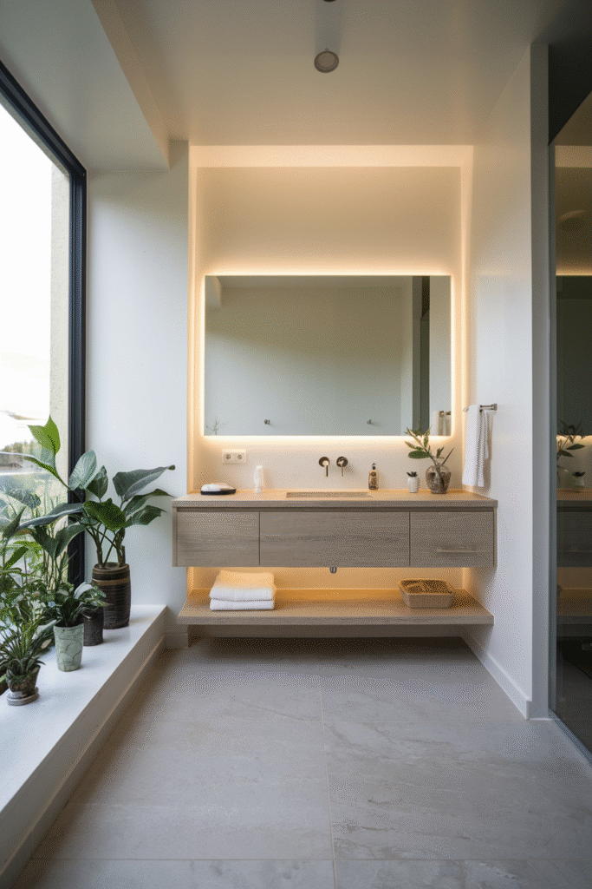
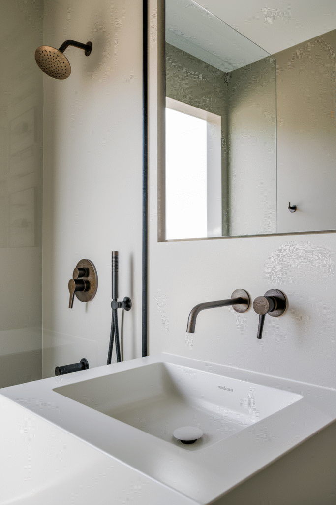
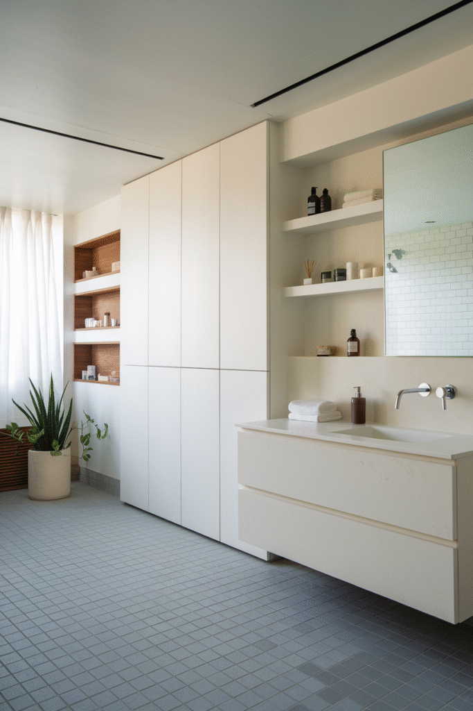
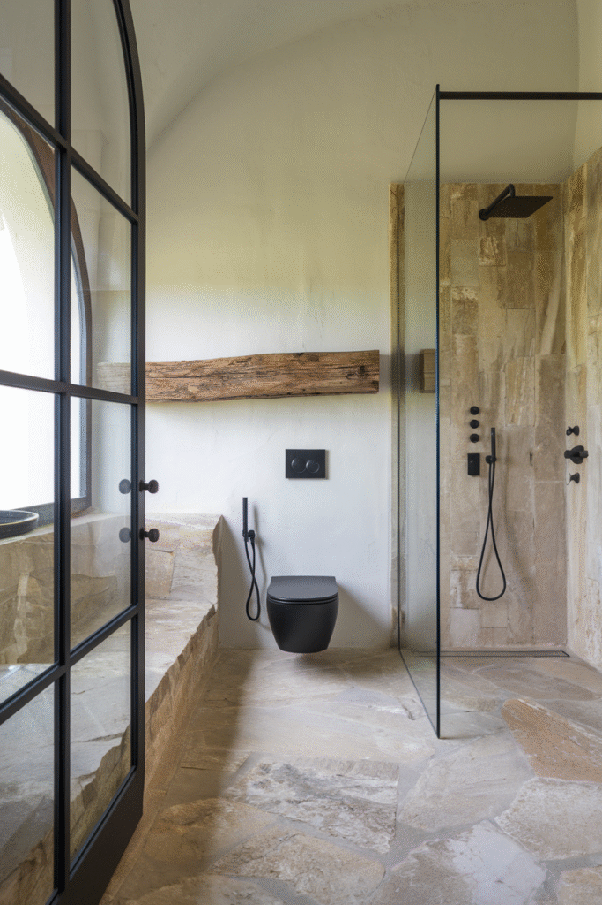
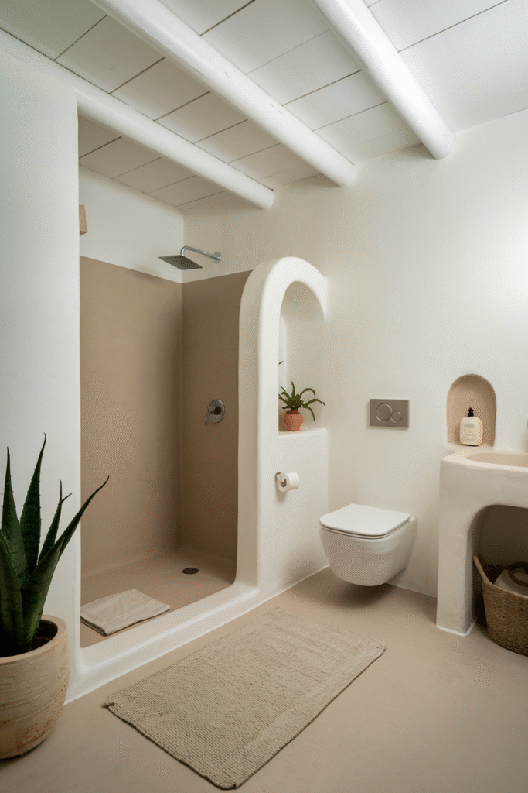

Setting up a minimalist bathroom is honestly the easy part.
Keeping it that way, through daily use and accumulating bottles and products, is where most minimalist bathrooms quietly fail.
This covers both, the actual design choices, and what keeps the look intact once real life moves in.

Keeping the Look Alive Long-Term
This is where most minimalist bathrooms actually fail, not in the initial design, but in the months after.
A regular habit of clearing the counter, even just before bed each night, keeps small clutter from becoming permanent.
A one-in-one-out rule for new products and accessories prevents the slow creep that undoes a carefully edited room.
The storage decisions made at the start matter more here than any single design choice, good storage makes staying minimal effortless, not a constant battle.

Making It Personal Without Losing the Restraint
One meaningful object, a small piece of art, a specific vase, keeps a minimalist bathroom from feeling like a hotel rather than a home.
The same "earn its place" rule that governs accessories applies here too.
A single personal touch, chosen carefully, does more than several generic ones ever could.

Texture Keeps It From Feeling Flat
A neutral palette with no texture variation can read as sterile rather than calm.
A woven bath mat, a textured towel, or a tactile tile all add depth without adding color or clutter.
This is what separates a genuinely well-executed minimalist bathroom from one that just looks empty.

Incorporating Greenery Without Overdoing It
One well-placed plant adds life to an otherwise neutral room without disrupting the restraint.
A low-maintenance, humidity-tolerant variety survives a bathroom's conditions without constant attention.
More than one or two plants starts to compete with the room's deliberate simplicity rather than complementing it.

Accessories: Genuinely Less Is More
A soap dispenser, one small plant, a neatly folded towel, that's close to the ceiling for visible accessories in a minimalist bathroom.
Every object left out needs to earn its place, both functionally and visually.
This is the rule most people struggle to maintain over time, as small items quietly accumulate on the counter.

Lighting That Elevates Everything Else
Warm, well-placed lighting makes every other choice in the room look more intentional.
A combination of ambient and task lighting covers both daily function and overall mood, the same balance that matters in any bathroom.
In a minimalist room specifically, good lighting also does some of the visual work that decor would handle in a busier space.

Choosing Sleek, Functional Fixtures
Clean-lined faucets, a simple showerhead, and hardware in one consistent finish keep the fixtures from becoming visual noise.
Function still matters more than pure style, a beautiful fixture that's awkward to use daily undercuts the whole point of a calm, functional room.
Matching finishes throughout, faucet, towel bar, cabinet pulls, reinforces the sense of restraint everywhere else in the room.

Smart Storage Is Non-Negotiable
A minimalist look falls apart fast without real storage behind it, clutter has to go somewhere.
Closed cabinetry, a hidden medicine cabinet, and drawer organizers all keep daily items out of sight without losing them.
This is the single most important practical decision in the entire room, more than any single visible choice.
Skipping adequate storage is the most common reason a minimalist bathroom doesn't stay that way.

Picking Materials That Feel Natural and Luxe
Stone, matte tile, and natural wood all read as higher-end than their actual cost, especially in a pared-back room with nothing else competing for attention.
A single standout material, a stone countertop, a wood vanity, does more work in a minimalist room than it would in a busier one.
This is where most of a minimalist bathroom's actual budget should go, since the material choices carry the whole look.

Choosing the Right Color Palette
Soft whites, warm grays, and muted neutrals form the backbone of most minimalist bathrooms.
A single accent color or material, used sparingly, keeps the palette from feeling flat without undoing the overall restraint.
Consistency matters more than any specific shade, one cohesive palette reads as intentional in a way a scattered one never does.

Why Minimalism Suits a Bathroom Specifically
A bathroom is a small, frequently used space where clutter accumulates fast, which makes restraint more valuable here than in almost any other room.
Fewer visible objects also means less to clean around, a genuinely practical benefit beyond the visual one.
A minimalist bathroom tends to feel calmer to use daily, not just better to look at in photos.
Final Thoughts
A minimalist bathroom isn't really about owning fewer things, it's about being deliberate with what stays visible.
Get the storage and material choices right at the very start, and the day-to-day maintenance becomes far easier than it actually sounds at first.
The goal was never a sterile, hotel-like room. It's a calm one that still feels genuinely lived-in day to day.
Start with storage above everything else, since that single decision determines whether the rest of this actually holds up over the long run.